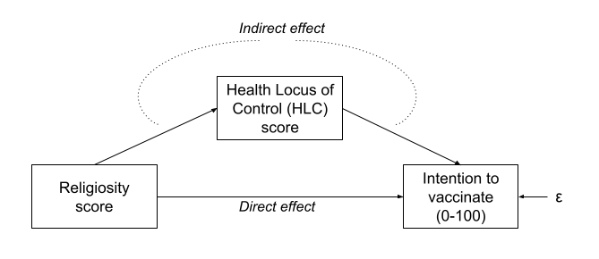
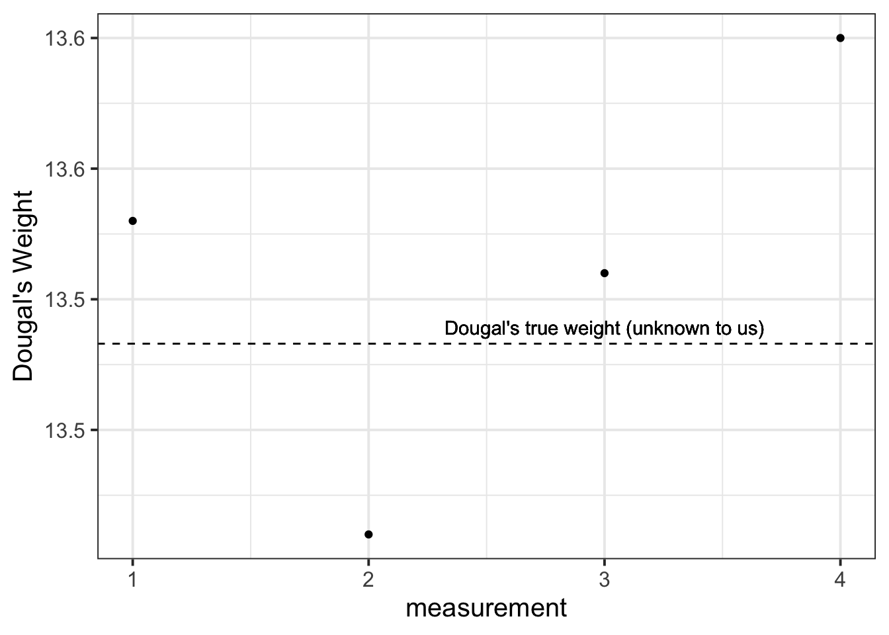
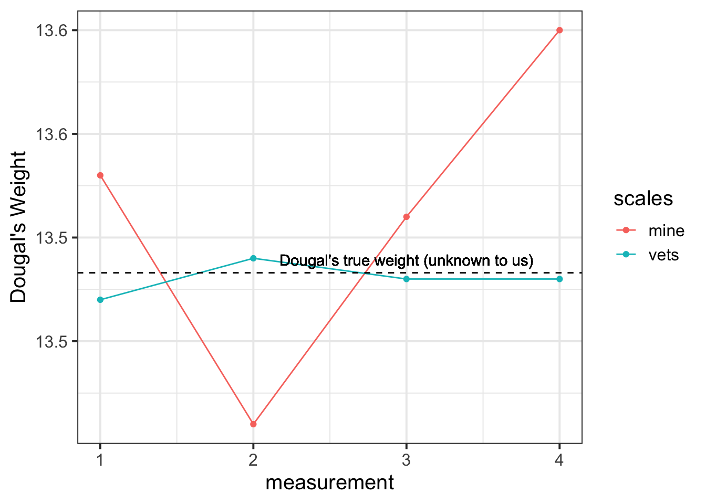

Measurement Error and the need for SEM
We’ve been mentioning Structural Equation Modelling (SEM) for a few weeks now, but we haven’t been very clear on what exactly it is. Is it CFA? Is it Path Analysis? In fact it is both - it is the overarching framework of which CFA and Path Analysis are just parts.
The beauty comes in when we put these two approaches together.
Path analysis, as we saw last week, offers a way of specifying and evaluating a structural model, in which variables relate to one another in various ways, via different (sometimes indirect) paths. Common models like our old friend multiple regression can be expressed in a Path Analysis framework.
Factor Analysis, on the other hand, brings something absolutely crucial to the table - it allows us to mitigate some of the problems which are associated with measurement error by specifying the existence of some latent variable.
Combine them and we can reap the rewards of having both a structural model and a measurement model. The measurement model is our specification between the items we directly observed, and the latent variables of which we consider these items to be manifestations. The structural model is our specified model of the relationships between the latent variables.
Scale Scores
You will often find research that foregoes the measurement model by taking a scale score (i.e., the sum or mean of a set of likert-type questions).
This is what we did in the example in last week’s exercises, e.g.:
- Intention to vaccinate (scored on a range of 0-100.
- Health Locus of Control (HLC) score (average score on a set of items relating to perceived control over ones own health).
- Religiosity (average score on a set of items relating to an individual’s religiosity).

In doing so, we make the assumption that these variables provide measurements of the underlying latent construct without error. Furthermore, when taking the average score, we also make the assumption that each item is equally representative of our construct.
If you think about it, taking the mean of a set of items still has the sense of being a ‘factor structure’ in that we think of the items as being , but it constrains all our item variances to be equal, and all our factor loadings to be equal. So it doesn’t really have the benefits of a factor model.
Let’s demonstrate this, using a dataset from the CFA week exercises.
It doesn’t matter what it is for this example, so I’m just going to keep the first 4 items (it will save me typing out all the others!)
df <- read_csv("https://uoepsy.github.io/data/conduct_problems_2.csv")[,1:4]
head(df)
## # A tibble: 6 × 4
## item1 item2 item3 item4
## <dbl> <dbl> <dbl> <dbl>
## 1 -0.968 -0.686 -0.342 0.600
## 2 0.275 -0.327 -0.0166 -1.08
## 3 0.255 0.826 -0.308 -1.15
## 4 1.73 1.67 -0.381 1.13
## 5 -0.464 -0.584 -0.507 -1.34
## 6 -0.501 -1.11 -0.310 -1.39
Now suppose that we are just going to take the mean of each persons score on the items, and use that as our measure of “conduct problems”.
We can achieve this easily with rowMeans()
# column bind the data with a column of the row means.
# only print the head of the data for now
cbind(df, mean = rowMeans(df)) %>% head
## item1 item2 item3 item4 mean
## 1 -0.968 -0.686 -0.3418 0.60 -0.349
## 2 0.275 -0.327 -0.0166 -1.08 -0.286
## 3 0.255 0.826 -0.3077 -1.15 -0.094
## 4 1.725 1.667 -0.3810 1.13 1.034
## 5 -0.464 -0.584 -0.5072 -1.34 -0.724
## 6 -0.501 -1.108 -0.3097 -1.39 -0.826
Expressed as a factor model, what we are specifying is the below. Notice how we make it so that certain paths are identical by using a label i (for all factor loadings) and j (for all item variances).
mean_model <- '
CP =~ i*item1 + i*item2 + i*item3 + i*item4
item1 ~~ j*item1
item2 ~~ j*item2
item3 ~~ j*item3
item4 ~~ j*item4
'
fitmean <- sem(mean_model, data = df)
We can obtain our factor scores using predict(). Let’s put them side-by-side with our rowMeans(), and we need to standardise them to get them in the same units:
factor_scores = scale(predict(fitmean))
rowmeans = scale(rowMeans(df))
cbind(factor_scores, rowmeans) %>% head
## CP
## [1,] -0.3790 -0.3790
## [2,] -0.3035 -0.3035
## [3,] -0.0697 -0.0697
## [4,] 1.3001 1.3001
## [5,] -0.8343 -0.8343
## [6,] -0.9589 -0.9589
An alternative option would be to conduct a factor analysis where we allow our loadings to be estimated freely (without the equality constraint that is created by using a row-mean or a row-sum). We could then extract the factor scores, and then conduct a path analysis with those scores. This avoids the problem of equally weighting of items to construct, but does not solve our issue of the fact that these variables are imperfect measures of the latent construct.
Reliability
The accuracy and inconsistency with which an observed variable reflects the underlying construct that we consider it to be measuring is termed the reliability.
A silly example
Suppose I’m trying to weigh my dog. I have a set of scales, and I put him on the scales. He weighs in at 13.53kg.
I immediately do it again, and the scales this time say 13.41kg. I do it again. 13.51kg, and again, 13.60kg.
What is happening? Is Dougal’s weight (Dougal is the dog, by the way) randomly fluctuating by 100g? Or are my scales just a bit inconsistent, and my observations contain measurement error?

I take him to the vets, where they have a much better set of weighing scales, and I do the same thing (measure him 4 times). The weights are 13.47, 13.49, 13.48, 13.48.
The scales at the vets are clearly more reliable. We still don’t know Dougal’s true weight, but we are better informed to estimate it if we go on the measurements from the scales at the vet.

Another way to think about reliability is to take the view that \(\text{"observations = truth + error"}\), and more error = less reliable.
There are different types of reliability:
- test re-test reliability: correlation between values over repeated measurements.
- alternate-form reliability: correlation between scores on different forms/versions of a test (we might want different versions to avoid practice effects).
- Inter-rater reliability: correlation between values obtained from different raters.
The form of reliability we are going to be most concerned with here is known as Internal Consistency. This is the extent to which items within a scale are correlated with one another. There are two main measures of this:
alpha and omega
\[
\begin{align}
& \text{Cronbach's }\alpha = \frac{n \cdot \overline{cov(ij)}}{\overline{\sigma^2_i} + (n-1) \cdot \overline{cov(ij)}} & \\
& \text{Where:} \\
& n = \text{number of items} \\
& \overline{cov(ij)} = \text{average covariance between item-pairs} \\
& \overline{\sigma^2_i} = \text{average item variance} \\
\end{align}
\]
Ranges from 0 to 1 (higher is better).
You can get this using the alpha() function from the psych package. You just give it your items, and it will give you a value. In doing so, it just assumes that all items are of equal importance.
McDonald’s Omega \(\omega\) is substantially more complicated, but avoids the limitation that Cronbach’s alpha which assumes that all items are equally related to the construct. You can get it using the omega() function from the psych package. If you want more info about it then the help docs (?omega()) are a good place to start.
(Re)introducing SEM
After spending much of our time in the regression framework, the move to SEM can feel mind-boggling.
Give two researchers the same whiteboard on which your variables are drawn, and they may connect them in completely different ways. This flexibility can at first make SEM feel like a free-for-all (i.e., just do whatever you like, get a p-value out of it, and off we go!). However, to some people this is one of the main benefits: it forces you to be explicit in specifying your theory, and allows you to test your theory and examine how well it fits with the data you observed.
We have actually already go to grips with the starting point of how structural equation models work in the previous weeks.
- begin with an observed covariance matrix
- specify our our theoretical model
- fit our model to the data, with our estimation method (e.g. maximum likelihood) providing us with the set of parameter estimates for our model which best reproduce the observed covariance matrix.
- The estimated parameters for our model will not perfectly reproduce the covariance matrix, but they will give us a model implied covariance matrix. We can compare this to the observed covariance matrix in order to assess the fit of our theoretical model.
SEM allows us to account for measurement error by directly including it as part of the model - the residual variances of our indicator variables (the bits we have been labelling \(u\) our diagrams such as Figure 1) represent the measurement error (and other stray causes) associated with each observed variable.
If we had a latent variable which we considered to be measured without error by a number of items, then we would expect the covariances between the items measuring the latent variable to be exactly 1. However, we always have measurement error, meaning our correlations between items are attenuated (i.e, closer to zero). Modelling this attenuation of between-item correlations as error in measuring some underlying latent variable, allows us to estimate associations between latent variables (which aren’t directly measured, and so do not have measurement error associated with them).
Perhaps the easiest way to think of SEM is as a combination of the CFA approach (latent variables giving rise to our observed variables), and path analysis (where we test a model defined as a collection of paths between variables). In SEM we typically have two somewhat distinct parts: a measurement model (the CFA-like bits from latent variables to their indicators), and the structural model (the paths we are interested in, often between the latent variables). You can see an example below:
You can’t test the structural model if the measurement model is bad
If you test the relationships between a set of latent factors, and they are not reliably measured by the observed items, then this error propagates up to influence the fit of the structural model.
To test the measurement model, it is typical to saturate the structural model (i.e., allow all the latent variables to correlate with one another). This way any misfit is due to the measurement model only.
Fit Indices
Chi-Square - \(\chi^2\)
For structural equation models, a chi-square value can be obtained which reflects the discrepancy between the model-implied covariance matrix and the observed covariance matrix. We can then calculate a p-value for this chi-square statistic by using the chi-square distribution with the degrees of freedom equivalent to that of the model.
If we denote the population covariance matrix as \(\Sigma\) and the model-implied covariance matrix as \(\Sigma(\Theta)\), then we can think of the null hypothesis here as \(H_0: \Sigma - \Sigma(\Theta) = 0\). In this way our null hypothesis is that our theoretical model is correct (and can therefore perfectly reproduce the covariance matrix).
It is very sensitive to departures from normality, as well as sample size (for models with \(n>400\), the \(\chi^2\) is almost always significant), and can often lead to rejecting otherwise adequate models.
Absolute fit indices
“Absolute” measures of fit are based on comparing our model to a (hypothetical) perfectly fitted model. So we get an indication of “how far from perfect fit” our model is. Bigger values on these measures tend to indicate worse fit.
Standardised Root Mean Square Residual - SRMR
Standardised root mean square residual (SRMR) summarises the average covariance residuals (discrepancies between observed and model-implied covariance matrices). Smaller SRMR equates to better fit.
Common cut-offs for SRMR:
Root Mean Square Error of Approximation - RMSEA
The RMSEA is another measure of absolute fit, but it penalises for the complexity of the model. Based on the \(\chi^2/df\) ratio, this measure of fit is intended to take into account for the fact the model might hold approximately (rather than exactly) in the population.
Typical cut-offs for RMSEA:
- \(<0.05\) : Close fit
- \(>0.1\) : Poor fit
Incremental fit
“Incremental” fit indices are more similar to how we think about \(R^2\). A value of 0 is the worst possible fitting model, and values of 1 is the best possible fitting model. These fit indices compare the fit of the model to the that of a baseline model. In most cases, this is the null model, in which there are no relationships between latent variables (i.e., covariances among latent variables are all assumed to be zero).
Tucker Lewis Index (TLI) and Comparative Fit Index (CFI)
Both of these (TLI & CFI) are somewhat sensitive to the average size of correlations in the data. If the average correlation between variables is low, then these indices will not be very high.
Apparently (not sure where this comes from), TLI and CFI shouldn’t be considered if the RMSEA for the null model is \(<.158\) (you can quickly get the RMSEA for the null model by using nullRMSEA(my_fitted_model) from the semTools package).
Common cut-offs for TLI:
- \(<0.9\) : Poor fit
- \(1\) : Very good fit
- \(>1\) : Possible overfitting
Common cut-offs for CFI:
To compare multiple models
Akaike Information Criterion - AIC
Baysian Information Criterion - BIC
Sample Size Adjusted BIC - SSBIC
We have already been introduced to AIC and BIC in the regression world, but we now add to that the sample size adjusted BIC (SSBIC). These indices are only meaningful when making comparisons, meaning that two different models must be estimated. Lower values indicate better fit. comparing mode
The AIC is a comparative measure of fit and so it is meaningful only when two different models are estimated. Lower values indicate a better fit and so the model with the lowest AIC is the best fitting model. There are somewhat different formulas given for the AIC in the literature, but those differences are not really meaningful as it is the difference in AIC that really matters:
Local Fit (Modification Indices)
In addition to the overall fit of our model, we can look at specific parameters, the inclusion of which may improve model fit. These are known as modification indices, and you can get them from passing a SEM object to modindices() or modificationindices(). They provide the estimated value for each additional parameter, and the improvement in the \(\chi^2\) value that would be obtained with its addition to the model. Note that it will be tempting to look at modification indices and start adding to your model to improve fit, but this should be strongly guided by whether the additional paths make theoretical sense. Additionally, once a path is added, and modification indices are computed on the new model, you may find some completely different paths are suggested as possibly modification indices!
Exercises
A researcher wants to apply the theory of planned behaviour to understand engagement in physical activity. The theory of planned behaviour is summarised in Figure 2 (only the latent variables and not the items are shown). Attitudes refer to the extent to which a person had a favourable view of exercising; subjective norms refer to whether they believe others whose opinions they care about believe exercise to be a good thing; and perceived behavioural control refers to the extent to which they believe exercising is under their control. Intentions refer to whether a person intends to exercise and ‘behaviour’ is a measure of the extent to which they exercised. Each construct is measured using four items.
The data is available either:
Question A1
Did you do the final exercise (writing up your results) from last week? Our example write-up is now visible (see last week) against which you can compare yours.
Please note: Writing-up is an important skill, and attempting these questions yourself (rather than simply reading through the example write-ups) will help a lot when it comes to writing your assessment.
Question A2
Read in the data using the appropriate function. We’ve given you .csv files for a long time now, but it’s good to be prepared to encounter all sorts of weird filetypes.
Can you successfully read in from both types of data?
Solution
Either one or the other of:
load(url("https://uoepsy.github.io/data/TPB_data.Rdata"))
TPB_data <- read.table("https://uoepsy.github.io/data/TPB_data.txt", header = TRUE, sep = "\t")
Question A3
Test separate one-factor models for each construct.
Are the measurement models satisfactory? (check their fit measures).
Solution
# specify one factor CFA model for attitudes
attitude_model <- 'att =~ attitude1 + attitude2 + attitude3 + attitude4'
# estimate the model
attitude_model.est <- cfa(attitude_model, data=TPB_data)
# inspect the output
summary(attitude_model.est, fit.measures=T, standardized=T)
## lavaan 0.6.15 ended normally after 19 iterations
##
## Estimator ML
## Optimization method NLMINB
## Number of model parameters 8
##
## Number of observations 890
##
## Model Test User Model:
##
## Test statistic 0.175
## Degrees of freedom 2
## P-value (Chi-square) 0.916
##
## Model Test Baseline Model:
##
## Test statistic 1032.173
## Degrees of freedom 6
## P-value 0.000
##
## User Model versus Baseline Model:
##
## Comparative Fit Index (CFI) 1.000
## Tucker-Lewis Index (TLI) 1.005
##
## Loglikelihood and Information Criteria:
##
## Loglikelihood user model (H0) -4620.704
## Loglikelihood unrestricted model (H1) -4620.616
##
## Akaike (AIC) 9257.408
## Bayesian (BIC) 9295.737
## Sample-size adjusted Bayesian (SABIC) 9270.331
##
## Root Mean Square Error of Approximation:
##
## RMSEA 0.000
## 90 Percent confidence interval - lower 0.000
## 90 Percent confidence interval - upper 0.025
## P-value H_0: RMSEA <= 0.050 0.990
## P-value H_0: RMSEA >= 0.080 0.000
##
## Standardized Root Mean Square Residual:
##
## SRMR 0.002
##
## Parameter Estimates:
##
## Standard errors Standard
## Information Expected
## Information saturated (h1) model Structured
##
## Latent Variables:
## Estimate Std.Err z-value P(>|z|) Std.lv Std.all
## att =~
## attitude1 1.000 0.705 0.685
## attitude2 1.052 0.062 17.093 0.000 0.742 0.722
## attitude3 0.989 0.060 16.432 0.000 0.698 0.681
## attitude4 1.060 0.061 17.270 0.000 0.747 0.736
##
## Variances:
## Estimate Std.Err z-value P(>|z|) Std.lv Std.all
## .attitude1 0.562 0.035 16.245 0.000 0.562 0.531
## .attitude2 0.505 0.033 15.077 0.000 0.505 0.478
## .attitude3 0.563 0.034 16.365 0.000 0.563 0.537
## .attitude4 0.474 0.032 14.582 0.000 0.474 0.459
## att 0.497 0.048 10.371 0.000 1.000 1.000
#check the model fit and that RMSEA<.05, SRMR<.05, TLI>0.95 and CFI>.95 and that all loadings are significant and >|.30|
modificationindices(attitude_model.est)
## lhs op rhs mi epc sepc.lv sepc.all sepc.nox
## 10 attitude1 ~~ attitude2 0.040 -0.006 -0.006 -0.011 -0.011
## 11 attitude1 ~~ attitude3 0.049 -0.006 -0.006 -0.011 -0.011
## 12 attitude1 ~~ attitude4 0.176 0.013 0.013 0.025 0.025
## 13 attitude2 ~~ attitude3 0.176 0.013 0.013 0.024 0.024
## 14 attitude2 ~~ attitude4 0.049 -0.007 -0.007 -0.015 -0.015
## 15 attitude3 ~~ attitude4 0.040 -0.006 -0.006 -0.012 -0.012
#check the largest modification indices to see if the expected parameter changes are large enough to justify any additional parameters in the model
The above code shows you the steps you should run through for the attitudes construct. You should repeat these steps for each of:
- attitudes
- subjective norms
- perceived behavioural control
- intentions
- behaviour
Question A4
Using lavaan syntax, specify a structural equation model that corresponds to the model in Figure 2. For each construct use a latent variable measured by the corresponding items in the dataset.
Solution
TPB_model<-'
#measurement models for attitudes, subjective norms and perceived behavioural control
att =~ attitude1 + attitude2 + attitude3 + attitude4
SN =~ SN1 + SN2 + SN3 + SN4
PBC =~ PBC1 + PBC2 + PBC3 + PBC4
intent =~ int1 + int2 + int3 + int4
beh =~ beh1 + beh2 + beh3 + beh4
#regressions
beh ~ intent + PBC
intent ~ att + SN + PBC
#covariances between attitudes, subjective norms and perceived behavioural control
att ~~ SN
att ~~ PBC
SN ~~ PBC
'
Question A5
Estimate the model from Question A4 and evaluate the model
- Does the model fit well?
- Are the hypothesised paths significant?
Solution
We can estimate the model using the sem() function.
By default the sem() function will scale the latent variables by fixing the loading of the first item for each latent variable to 1 but we can override this by setting std.lv=T if we wanted to. By default, maximum likelihood estimation will be used.
TPB_model.est<-sem(TPB_model, data=TPB_data, std.lv=T)
summary(TPB_model.est, fit.measures=T, standardized=T)
## lavaan 0.6.15 ended normally after 24 iterations
##
## Estimator ML
## Optimization method NLMINB
## Number of model parameters 48
##
## Number of observations 890
##
## Model Test User Model:
##
## Test statistic 157.059
## Degrees of freedom 162
## P-value (Chi-square) 0.595
##
## Model Test Baseline Model:
##
## Test statistic 5335.624
## Degrees of freedom 190
## P-value 0.000
##
## User Model versus Baseline Model:
##
## Comparative Fit Index (CFI) 1.000
## Tucker-Lewis Index (TLI) 1.001
##
## Loglikelihood and Information Criteria:
##
## Loglikelihood user model (H0) -24403.833
## Loglikelihood unrestricted model (H1) -24325.304
##
## Akaike (AIC) 48903.667
## Bayesian (BIC) 49133.646
## Sample-size adjusted Bayesian (SABIC) 48981.207
##
## Root Mean Square Error of Approximation:
##
## RMSEA 0.000
## 90 Percent confidence interval - lower 0.000
## 90 Percent confidence interval - upper 0.014
## P-value H_0: RMSEA <= 0.050 1.000
## P-value H_0: RMSEA >= 0.080 0.000
##
## Standardized Root Mean Square Residual:
##
## SRMR 0.023
##
## Parameter Estimates:
##
## Standard errors Standard
## Information Expected
## Information saturated (h1) model Structured
##
## Latent Variables:
## Estimate Std.Err z-value P(>|z|) Std.lv Std.all
## att =~
## attitude1 0.710 0.034 21.152 0.000 0.710 0.689
## attitude2 0.746 0.033 22.590 0.000 0.746 0.726
## attitude3 0.707 0.033 21.155 0.000 0.707 0.689
## attitude4 0.730 0.033 22.298 0.000 0.730 0.719
## SN =~
## SN1 0.685 0.036 18.786 0.000 0.685 0.661
## SN2 0.673 0.036 18.466 0.000 0.673 0.651
## SN3 0.646 0.037 17.369 0.000 0.646 0.616
## SN4 0.681 0.038 18.064 0.000 0.681 0.638
## PBC =~
## PBC1 0.776 0.029 27.045 0.000 0.776 0.799
## PBC2 0.728 0.028 25.777 0.000 0.728 0.772
## PBC3 0.709 0.028 25.023 0.000 0.709 0.756
## PBC4 0.747 0.029 25.813 0.000 0.747 0.773
## intent =~
## int1 0.459 0.033 14.067 0.000 0.708 0.584
## int2 0.535 0.035 15.144 0.000 0.824 0.646
## int3 0.513 0.035 14.794 0.000 0.791 0.625
## int4 0.492 0.034 14.300 0.000 0.759 0.597
## beh =~
## beh1 0.623 0.039 16.044 0.000 0.808 0.649
## beh2 0.584 0.039 15.022 0.000 0.758 0.599
## beh3 0.576 0.039 14.782 0.000 0.748 0.588
## beh4 0.599 0.040 15.153 0.000 0.777 0.605
##
## Regressions:
## Estimate Std.Err z-value P(>|z|) Std.lv Std.all
## beh ~
## intent 0.426 0.057 7.513 0.000 0.506 0.506
## PBC 0.241 0.071 3.373 0.001 0.185 0.185
## intent ~
## att 0.553 0.069 8.010 0.000 0.359 0.359
## SN 0.302 0.064 4.692 0.000 0.196 0.196
## PBC 0.756 0.073 10.364 0.000 0.490 0.490
##
## Covariances:
## Estimate Std.Err z-value P(>|z|) Std.lv Std.all
## att ~~
## SN 0.320 0.040 7.938 0.000 0.320 0.320
## PBC 0.253 0.038 6.611 0.000 0.253 0.253
## SN ~~
## PBC 0.196 0.041 4.800 0.000 0.196 0.196
##
## Variances:
## Estimate Std.Err z-value P(>|z|) Std.lv Std.all
## .attitude1 0.556 0.034 16.511 0.000 0.556 0.525
## .attitude2 0.498 0.032 15.415 0.000 0.498 0.472
## .attitude3 0.551 0.033 16.509 0.000 0.551 0.525
## .attitude4 0.498 0.032 15.658 0.000 0.498 0.483
## .SN1 0.605 0.039 15.384 0.000 0.605 0.563
## .SN2 0.616 0.039 15.689 0.000 0.616 0.577
## .SN3 0.681 0.041 16.608 0.000 0.681 0.620
## .SN4 0.676 0.042 16.047 0.000 0.676 0.593
## .PBC1 0.341 0.023 15.163 0.000 0.341 0.362
## .PBC2 0.359 0.022 16.144 0.000 0.359 0.404
## .PBC3 0.377 0.023 16.639 0.000 0.377 0.429
## .PBC4 0.376 0.023 16.119 0.000 0.376 0.403
## .int1 0.969 0.054 18.096 0.000 0.969 0.659
## .int2 0.949 0.056 16.914 0.000 0.949 0.583
## .int3 0.976 0.056 17.371 0.000 0.976 0.610
## .int4 1.042 0.058 17.889 0.000 1.042 0.644
## .beh1 0.900 0.057 15.656 0.000 0.900 0.579
## .beh2 1.026 0.061 16.918 0.000 1.026 0.641
## .beh3 1.057 0.062 17.152 0.000 1.057 0.654
## .beh4 1.045 0.062 16.783 0.000 1.045 0.634
## att 1.000 1.000 1.000
## SN 1.000 1.000 1.000
## PBC 1.000 1.000 1.000
## .intent 1.000 0.421 0.421
## .beh 1.000 0.593 0.593
We can see that the model fits well according to RMSEA, SRMR, TLI and CFI. All of the hypothesised paths in the theory of planned behaviour are statistically significant.
Question A6
Examine the modification indices and expected parameter changes - are there any additional parameters you would consider including?
Solution
modindices(TPB_model.est)
## lhs op rhs mi epc sepc.lv sepc.all sepc.nox
## 54 att =~ SN1 1.663 0.049 0.049 0.047 0.047
## 55 att =~ SN2 3.197 0.067 0.067 0.065 0.065
## 56 att =~ SN3 1.283 -0.043 -0.043 -0.041 -0.041
## 57 att =~ SN4 4.294 -0.081 -0.081 -0.076 -0.076
## 58 att =~ PBC1 0.350 -0.016 -0.016 -0.017 -0.017
## 59 att =~ PBC2 1.394 0.032 0.032 0.034 0.034
## 60 att =~ PBC3 0.133 -0.010 -0.010 -0.011 -0.011
## 61 att =~ PBC4 0.043 -0.006 -0.006 -0.006 -0.006
## 62 att =~ int1 0.002 -0.003 -0.003 -0.002 -0.002
## 63 att =~ int2 0.014 -0.007 -0.007 -0.005 -0.005
## 64 att =~ int3 0.379 0.035 0.035 0.027 0.027
## 65 att =~ int4 0.243 -0.028 -0.028 -0.022 -0.022
## 66 att =~ beh1 0.134 -0.016 -0.016 -0.013 -0.013
## 67 att =~ beh2 0.844 0.042 0.042 0.034 0.034
## 68 att =~ beh3 0.033 0.008 0.008 0.007 0.007
## 69 att =~ beh4 0.420 -0.030 -0.030 -0.024 -0.024
## 70 SN =~ attitude1 0.923 0.035 0.035 0.034 0.034
## 71 SN =~ attitude2 0.454 0.024 0.024 0.023 0.023
## 72 SN =~ attitude3 0.054 0.008 0.008 0.008 0.008
## 73 SN =~ attitude4 3.291 -0.064 -0.064 -0.063 -0.063
## 74 SN =~ PBC1 0.216 -0.013 -0.013 -0.013 -0.013
## 75 SN =~ PBC2 1.679 0.036 0.036 0.038 0.038
## 76 SN =~ PBC3 0.485 -0.019 -0.019 -0.021 -0.021
## 77 SN =~ PBC4 0.034 -0.005 -0.005 -0.005 -0.005
## 78 SN =~ int1 2.659 -0.080 -0.080 -0.066 -0.066
## 79 SN =~ int2 0.050 -0.011 -0.011 -0.009 -0.009
## 80 SN =~ int3 0.269 0.027 0.027 0.021 0.021
## 81 SN =~ int4 1.081 0.054 0.054 0.042 0.042
## 82 SN =~ beh1 2.904 -0.075 -0.075 -0.060 -0.060
## 83 SN =~ beh2 0.263 0.023 0.023 0.019 0.019
## 84 SN =~ beh3 1.906 0.064 0.064 0.050 0.050
## 85 SN =~ beh4 0.202 0.021 0.021 0.016 0.016
## 86 PBC =~ attitude1 1.435 -0.039 -0.039 -0.038 -0.038
## 87 PBC =~ attitude2 0.256 0.016 0.016 0.016 0.016
## 88 PBC =~ attitude3 1.785 0.043 0.043 0.042 0.042
## 89 PBC =~ attitude4 0.415 -0.020 -0.020 -0.020 -0.020
## 90 PBC =~ SN1 0.103 0.011 0.011 0.011 0.011
## 91 PBC =~ SN2 1.946 0.048 0.048 0.046 0.046
## 92 PBC =~ SN3 3.081 -0.061 -0.061 -0.058 -0.058
## 93 PBC =~ SN4 0.005 -0.002 -0.002 -0.002 -0.002
## 94 PBC =~ int1 0.043 -0.012 -0.012 -0.010 -0.010
## 95 PBC =~ int2 0.064 0.016 0.016 0.012 0.012
## 96 PBC =~ int3 0.000 0.001 0.001 0.001 0.001
## 97 PBC =~ int4 0.007 -0.005 -0.005 -0.004 -0.004
## 98 PBC =~ beh1 0.005 -0.004 -0.004 -0.003 -0.003
## 99 PBC =~ beh2 1.367 0.063 0.063 0.050 0.050
## 100 PBC =~ beh3 0.001 -0.001 -0.001 -0.001 -0.001
## 101 PBC =~ beh4 1.119 -0.058 -0.058 -0.045 -0.045
## 102 intent =~ attitude1 0.043 0.006 0.009 0.009 0.009
## 103 intent =~ attitude2 0.353 0.016 0.025 0.025 0.025
## 104 intent =~ attitude3 3.425 0.051 0.079 0.077 0.077
## 105 intent =~ attitude4 6.558 -0.070 -0.108 -0.106 -0.106
## 106 intent =~ SN1 0.024 0.004 0.006 0.006 0.006
## 107 intent =~ SN2 4.489 0.056 0.086 0.084 0.084
## 108 intent =~ SN3 1.063 -0.028 -0.043 -0.041 -0.041
## 109 intent =~ SN4 1.761 -0.036 -0.056 -0.052 -0.052
## 110 intent =~ PBC1 0.058 -0.006 -0.009 -0.010 -0.010
## 111 intent =~ PBC2 0.656 0.020 0.031 0.033 0.033
## 112 intent =~ PBC3 0.069 -0.007 -0.010 -0.011 -0.011
## 113 intent =~ PBC4 0.092 -0.008 -0.012 -0.012 -0.012
## 114 intent =~ beh1 0.008 0.004 0.006 0.005 0.005
## 115 intent =~ beh2 0.306 -0.025 -0.039 -0.031 -0.031
## 116 intent =~ beh3 1.632 0.059 0.091 0.071 0.071
## 117 intent =~ beh4 0.630 -0.037 -0.057 -0.044 -0.044
## 118 beh =~ attitude1 0.187 -0.012 -0.016 -0.015 -0.015
## 119 beh =~ attitude2 1.049 -0.028 -0.036 -0.035 -0.035
## 120 beh =~ attitude3 6.156 0.068 0.089 0.087 0.087
## 121 beh =~ attitude4 0.815 -0.024 -0.031 -0.031 -0.031
## 122 beh =~ SN1 0.084 0.008 0.011 0.010 0.010
## 123 beh =~ SN2 1.865 0.039 0.051 0.049 0.049
## 124 beh =~ SN3 2.447 -0.046 -0.059 -0.057 -0.057
## 125 beh =~ SN4 0.009 0.003 0.004 0.003 0.003
## 126 beh =~ PBC1 0.923 0.026 0.033 0.034 0.034
## 127 beh =~ PBC2 0.127 -0.009 -0.012 -0.013 -0.013
## 128 beh =~ PBC3 0.478 0.018 0.024 0.025 0.025
## 129 beh =~ PBC4 1.692 -0.035 -0.046 -0.047 -0.047
## 130 beh =~ int1 0.556 -0.038 -0.049 -0.040 -0.040
## 131 beh =~ int2 1.705 0.069 0.089 0.070 0.070
## 132 beh =~ int3 0.140 -0.020 -0.025 -0.020 -0.020
## 133 beh =~ int4 0.260 -0.027 -0.035 -0.027 -0.027
## 134 attitude1 ~~ attitude2 0.587 -0.022 -0.022 -0.041 -0.041
## 135 attitude1 ~~ attitude3 0.930 -0.026 -0.026 -0.048 -0.048
## 136 attitude1 ~~ attitude4 1.278 0.031 0.031 0.059 0.059
## 137 attitude1 ~~ SN1 0.738 0.021 0.021 0.035 0.035
## 138 attitude1 ~~ SN2 0.068 0.006 0.006 0.011 0.011
## 139 attitude1 ~~ SN3 0.258 0.013 0.013 0.020 0.020
## 140 attitude1 ~~ SN4 0.446 -0.017 -0.017 -0.027 -0.027
## 141 attitude1 ~~ PBC1 2.436 -0.029 -0.029 -0.066 -0.066
## 142 attitude1 ~~ PBC2 0.070 -0.005 -0.005 -0.011 -0.011
## 143 attitude1 ~~ PBC3 0.033 0.003 0.003 0.007 0.007
## 144 attitude1 ~~ PBC4 0.031 0.003 0.003 0.007 0.007
## 145 attitude1 ~~ int1 0.075 0.008 0.008 0.011 0.011
## 146 attitude1 ~~ int2 0.476 -0.020 -0.020 -0.028 -0.028
## 147 attitude1 ~~ int3 3.310 0.054 0.054 0.073 0.073
## 148 attitude1 ~~ int4 0.254 0.015 0.015 0.020 0.020
## 149 attitude1 ~~ beh1 1.811 0.039 0.039 0.055 0.055
## 150 attitude1 ~~ beh2 0.045 0.006 0.006 0.008 0.008
## 151 attitude1 ~~ beh3 0.490 -0.021 -0.021 -0.028 -0.028
## 152 attitude1 ~~ beh4 2.283 -0.046 -0.046 -0.060 -0.060
## 153 attitude2 ~~ attitude3 0.234 -0.014 -0.014 -0.026 -0.026
## 154 attitude2 ~~ attitude4 0.582 0.022 0.022 0.044 0.044
## 155 attitude2 ~~ SN1 9.972 0.073 0.073 0.133 0.133
## 156 attitude2 ~~ SN2 2.493 -0.037 -0.037 -0.066 -0.066
## 157 attitude2 ~~ SN3 0.257 -0.012 -0.012 -0.021 -0.021
## 158 attitude2 ~~ SN4 0.314 -0.014 -0.014 -0.023 -0.023
## 159 attitude2 ~~ PBC1 0.342 -0.010 -0.010 -0.025 -0.025
## 160 attitude2 ~~ PBC2 0.529 0.013 0.013 0.031 0.031
## 161 attitude2 ~~ PBC3 0.302 0.010 0.010 0.023 0.023
## 162 attitude2 ~~ PBC4 0.002 -0.001 -0.001 -0.002 -0.002
## 163 attitude2 ~~ int1 2.209 0.042 0.042 0.060 0.060
## 164 attitude2 ~~ int2 0.020 -0.004 -0.004 -0.006 -0.006
## 165 attitude2 ~~ int3 0.001 -0.001 -0.001 -0.001 -0.001
## 166 attitude2 ~~ int4 0.063 0.007 0.007 0.010 0.010
## 167 attitude2 ~~ beh1 0.447 -0.019 -0.019 -0.028 -0.028
## 168 attitude2 ~~ beh2 1.233 0.032 0.032 0.045 0.045
## 169 attitude2 ~~ beh3 8.914 -0.088 -0.088 -0.121 -0.121
## 170 attitude2 ~~ beh4 0.000 0.000 0.000 0.000 0.000
## 171 attitude3 ~~ attitude4 0.084 0.008 0.008 0.015 0.015
## 172 attitude3 ~~ SN1 2.870 -0.040 -0.040 -0.070 -0.070
## 173 attitude3 ~~ SN2 4.497 0.051 0.051 0.087 0.087
## 174 attitude3 ~~ SN3 0.029 -0.004 -0.004 -0.007 -0.007
## 175 attitude3 ~~ SN4 0.303 -0.014 -0.014 -0.022 -0.022
## 176 attitude3 ~~ PBC1 1.372 0.021 0.021 0.049 0.049
## 177 attitude3 ~~ PBC2 0.044 0.004 0.004 0.009 0.009
## 178 attitude3 ~~ PBC3 0.001 0.000 0.000 -0.001 -0.001
## 179 attitude3 ~~ PBC4 1.608 -0.024 -0.024 -0.052 -0.052
## 180 attitude3 ~~ int1 0.005 0.002 0.002 0.003 0.003
## 181 attitude3 ~~ int2 0.112 0.010 0.010 0.014 0.014
## 182 attitude3 ~~ int3 0.005 0.002 0.002 0.003 0.003
## 183 attitude3 ~~ int4 0.031 0.005 0.005 0.007 0.007
## 184 attitude3 ~~ beh1 0.123 -0.010 -0.010 -0.014 -0.014
## 185 attitude3 ~~ beh2 0.000 0.000 0.000 0.000 0.000
## 186 attitude3 ~~ beh3 3.529 0.057 0.057 0.074 0.074
## 187 attitude3 ~~ beh4 1.412 0.036 0.036 0.047 0.047
## 188 attitude4 ~~ SN1 0.783 -0.020 -0.020 -0.037 -0.037
## 189 attitude4 ~~ SN2 0.173 0.010 0.010 0.017 0.017
## 190 attitude4 ~~ SN3 0.696 -0.020 -0.020 -0.034 -0.034
## 191 attitude4 ~~ SN4 0.000 0.000 0.000 0.001 0.001
## 192 attitude4 ~~ PBC1 0.143 0.007 0.007 0.016 0.016
## 193 attitude4 ~~ PBC2 0.063 0.004 0.004 0.011 0.011
## 194 attitude4 ~~ PBC3 0.901 -0.017 -0.017 -0.039 -0.039
## 195 attitude4 ~~ PBC4 0.964 0.018 0.018 0.041 0.041
## 196 attitude4 ~~ int1 2.923 -0.048 -0.048 -0.069 -0.069
## 197 attitude4 ~~ int2 0.170 0.012 0.012 0.017 0.017
## 198 attitude4 ~~ int3 1.396 -0.034 -0.034 -0.048 -0.048
## 199 attitude4 ~~ int4 2.376 -0.045 -0.045 -0.062 -0.062
## 200 attitude4 ~~ beh1 0.276 -0.015 -0.015 -0.022 -0.022
## 201 attitude4 ~~ beh2 0.036 0.006 0.006 0.008 0.008
## 202 attitude4 ~~ beh3 1.806 0.039 0.039 0.054 0.054
## 203 attitude4 ~~ beh4 0.122 -0.010 -0.010 -0.014 -0.014
## 204 SN1 ~~ SN2 3.906 -0.069 -0.069 -0.114 -0.114
## 205 SN1 ~~ SN3 1.516 0.042 0.042 0.066 0.066
## 206 SN1 ~~ SN4 0.187 0.015 0.015 0.024 0.024
## 207 SN1 ~~ PBC1 0.563 -0.015 -0.015 -0.032 -0.032
## 208 SN1 ~~ PBC2 0.396 0.012 0.012 0.026 0.026
## 209 SN1 ~~ PBC3 1.548 0.025 0.025 0.051 0.051
## 210 SN1 ~~ PBC4 0.348 -0.012 -0.012 -0.025 -0.025
## 211 SN1 ~~ int1 0.183 -0.013 -0.013 -0.017 -0.017
## 212 SN1 ~~ int2 0.117 -0.011 -0.011 -0.014 -0.014
## 213 SN1 ~~ int3 2.133 -0.045 -0.045 -0.059 -0.059
## 214 SN1 ~~ int4 0.802 0.028 0.028 0.036 0.036
## 215 SN1 ~~ beh1 0.345 0.018 0.018 0.024 0.024
## 216 SN1 ~~ beh2 0.044 -0.007 -0.007 -0.008 -0.008
## 217 SN1 ~~ beh3 3.760 -0.062 -0.062 -0.078 -0.078
## 218 SN1 ~~ beh4 2.978 0.056 0.056 0.070 0.070
## 219 SN2 ~~ SN3 0.193 -0.015 -0.015 -0.023 -0.023
## 220 SN2 ~~ SN4 0.946 0.034 0.034 0.053 0.053
## 221 SN2 ~~ PBC1 0.086 0.006 0.006 0.012 0.012
## 222 SN2 ~~ PBC2 0.099 0.006 0.006 0.013 0.013
## 223 SN2 ~~ PBC3 0.271 -0.010 -0.010 -0.021 -0.021
## 224 SN2 ~~ PBC4 0.077 0.006 0.006 0.012 0.012
## 225 SN2 ~~ int1 0.014 -0.004 -0.004 -0.005 -0.005
## 226 SN2 ~~ int2 1.097 0.033 0.033 0.043 0.043
## 227 SN2 ~~ int3 0.058 -0.008 -0.008 -0.010 -0.010
## 228 SN2 ~~ int4 0.343 0.019 0.019 0.023 0.023
## 229 SN2 ~~ beh1 0.980 -0.030 -0.030 -0.041 -0.041
## 230 SN2 ~~ beh2 0.065 0.008 0.008 0.010 0.010
## 231 SN2 ~~ beh3 3.600 0.061 0.061 0.076 0.076
## 232 SN2 ~~ beh4 0.612 -0.025 -0.025 -0.031 -0.031
## 233 SN3 ~~ SN4 0.043 -0.007 -0.007 -0.010 -0.010
## 234 SN3 ~~ PBC1 0.047 -0.004 -0.004 -0.009 -0.009
## 235 SN3 ~~ PBC2 0.109 0.007 0.007 0.013 0.013
## 236 SN3 ~~ PBC3 2.593 -0.033 -0.033 -0.065 -0.065
## 237 SN3 ~~ PBC4 0.002 -0.001 -0.001 -0.002 -0.002
## 238 SN3 ~~ int1 2.489 -0.050 -0.050 -0.061 -0.061
## 239 SN3 ~~ int2 0.694 -0.027 -0.027 -0.033 -0.033
## 240 SN3 ~~ int3 11.073 0.107 0.107 0.131 0.131
## 241 SN3 ~~ int4 0.503 0.023 0.023 0.028 0.028
## 242 SN3 ~~ beh1 0.295 -0.017 -0.017 -0.022 -0.022
## 243 SN3 ~~ beh2 0.624 -0.026 -0.026 -0.031 -0.031
## 244 SN3 ~~ beh3 0.163 -0.013 -0.013 -0.016 -0.016
## 245 SN3 ~~ beh4 0.133 0.012 0.012 0.014 0.014
## 246 SN4 ~~ PBC1 0.074 0.006 0.006 0.011 0.011
## 247 SN4 ~~ PBC2 0.008 -0.002 -0.002 -0.004 -0.004
## 248 SN4 ~~ PBC3 0.000 0.000 0.000 0.000 0.000
## 249 SN4 ~~ PBC4 0.080 0.006 0.006 0.012 0.012
## 250 SN4 ~~ int1 0.034 0.006 0.006 0.007 0.007
## 251 SN4 ~~ int2 0.019 -0.004 -0.004 -0.006 -0.006
## 252 SN4 ~~ int3 0.802 -0.029 -0.029 -0.036 -0.036
## 253 SN4 ~~ int4 0.917 -0.032 -0.032 -0.038 -0.038
## 254 SN4 ~~ beh1 1.596 -0.040 -0.040 -0.052 -0.052
## 255 SN4 ~~ beh2 2.241 0.050 0.050 0.060 0.060
## 256 SN4 ~~ beh3 3.345 0.061 0.061 0.073 0.073
## 257 SN4 ~~ beh4 0.240 -0.016 -0.016 -0.020 -0.020
## 258 PBC1 ~~ PBC2 0.368 -0.012 -0.012 -0.034 -0.034
## 259 PBC1 ~~ PBC3 0.246 -0.010 -0.010 -0.027 -0.027
## 260 PBC1 ~~ PBC4 0.777 0.018 0.018 0.050 0.050
## 261 PBC1 ~~ int1 0.018 0.003 0.003 0.005 0.005
## 262 PBC1 ~~ int2 0.879 -0.022 -0.022 -0.040 -0.040
## 263 PBC1 ~~ int3 0.008 -0.002 -0.002 -0.004 -0.004
## 264 PBC1 ~~ int4 0.284 0.013 0.013 0.022 0.022
## 265 PBC1 ~~ beh1 3.313 -0.043 -0.043 -0.078 -0.078
## 266 PBC1 ~~ beh2 6.404 0.062 0.062 0.105 0.105
## 267 PBC1 ~~ beh3 0.350 0.015 0.015 0.025 0.025
## 268 PBC1 ~~ beh4 0.353 0.015 0.015 0.025 0.025
## 269 PBC2 ~~ PBC3 0.437 0.012 0.012 0.033 0.033
## 270 PBC2 ~~ PBC4 0.033 -0.003 -0.003 -0.009 -0.009
## 271 PBC2 ~~ int1 0.031 0.004 0.004 0.007 0.007
## 272 PBC2 ~~ int2 0.194 0.011 0.011 0.018 0.018
## 273 PBC2 ~~ int3 0.093 -0.007 -0.007 -0.012 -0.012
## 274 PBC2 ~~ int4 0.002 -0.001 -0.001 -0.002 -0.002
## 275 PBC2 ~~ beh1 0.087 0.007 0.007 0.012 0.012
## 276 PBC2 ~~ beh2 2.826 -0.041 -0.041 -0.068 -0.068
## 277 PBC2 ~~ beh3 0.060 -0.006 -0.006 -0.010 -0.010
## 278 PBC2 ~~ beh4 0.186 0.011 0.011 0.018 0.018
## 279 PBC3 ~~ PBC4 0.068 -0.005 -0.005 -0.013 -0.013
## 280 PBC3 ~~ int1 0.356 0.014 0.014 0.024 0.024
## 281 PBC3 ~~ int2 0.487 0.017 0.017 0.028 0.028
## 282 PBC3 ~~ int3 1.378 -0.029 -0.029 -0.047 -0.047
## 283 PBC3 ~~ int4 0.292 -0.013 -0.013 -0.021 -0.021
## 284 PBC3 ~~ beh1 0.458 0.016 0.016 0.028 0.028
## 285 PBC3 ~~ beh2 0.000 0.000 0.000 0.001 0.001
## 286 PBC3 ~~ beh3 0.108 0.008 0.008 0.013 0.013
## 287 PBC3 ~~ beh4 0.048 0.006 0.006 0.009 0.009
## 288 PBC4 ~~ int1 1.150 -0.026 -0.026 -0.043 -0.043
## 289 PBC4 ~~ int2 0.011 -0.003 -0.003 -0.004 -0.004
## 290 PBC4 ~~ int3 2.882 0.042 0.042 0.069 0.069
## 291 PBC4 ~~ int4 0.000 0.000 0.000 0.000 0.000
## 292 PBC4 ~~ beh1 0.507 0.017 0.017 0.030 0.030
## 293 PBC4 ~~ beh2 0.419 0.016 0.016 0.026 0.026
## 294 PBC4 ~~ beh3 1.507 -0.031 -0.031 -0.050 -0.050
## 295 PBC4 ~~ beh4 4.308 -0.053 -0.053 -0.085 -0.085
## 296 int1 ~~ int2 0.334 -0.024 -0.024 -0.025 -0.025
## 297 int1 ~~ int3 2.242 0.062 0.062 0.064 0.064
## 298 int1 ~~ int4 0.450 0.028 0.028 0.028 0.028
## 299 int1 ~~ beh1 0.002 -0.002 -0.002 -0.002 -0.002
## 300 int1 ~~ beh2 0.010 0.004 0.004 0.004 0.004
## 301 int1 ~~ beh3 0.447 -0.026 -0.026 -0.026 -0.026
## 302 int1 ~~ beh4 0.102 -0.012 -0.012 -0.012 -0.012
## 303 int2 ~~ int3 0.956 -0.043 -0.043 -0.044 -0.044
## 304 int2 ~~ int4 0.398 0.028 0.028 0.028 0.028
## 305 int2 ~~ beh1 3.497 0.071 0.071 0.077 0.077
## 306 int2 ~~ beh2 3.910 -0.078 -0.078 -0.079 -0.079
## 307 int2 ~~ beh3 0.155 0.016 0.016 0.016 0.016
## 308 int2 ~~ beh4 1.241 0.044 0.044 0.044 0.044
## 309 int3 ~~ int4 0.925 -0.042 -0.042 -0.041 -0.041
## 310 int3 ~~ beh1 0.001 0.001 0.001 0.001 0.001
## 311 int3 ~~ beh2 0.023 -0.006 -0.006 -0.006 -0.006
## 312 int3 ~~ beh3 0.001 0.001 0.001 0.001 0.001
## 313 int3 ~~ beh4 0.158 -0.016 -0.016 -0.016 -0.016
## 314 int4 ~~ beh1 0.295 -0.021 -0.021 -0.022 -0.022
## 315 int4 ~~ beh2 1.510 -0.049 -0.049 -0.048 -0.048
## 316 int4 ~~ beh3 3.937 0.081 0.081 0.077 0.077
## 317 int4 ~~ beh4 0.551 -0.030 -0.030 -0.029 -0.029
## 318 beh1 ~~ beh2 0.009 -0.005 -0.005 -0.005 -0.005
## 319 beh1 ~~ beh3 1.786 -0.065 -0.065 -0.066 -0.066
## 320 beh1 ~~ beh4 1.863 0.067 0.067 0.070 0.070
## 321 beh2 ~~ beh3 0.250 0.024 0.024 0.023 0.023
## 322 beh2 ~~ beh4 0.156 -0.019 -0.019 -0.019 -0.019
## 323 beh3 ~~ beh4 0.003 -0.003 -0.003 -0.002 -0.002
## 325 att ~~ beh 0.006 -0.004 -0.004 -0.004 -0.004
## 327 SN ~~ beh 0.114 0.018 0.018 0.018 0.018
## 329 PBC ~~ beh 0.049 -0.055 -0.055 -0.055 -0.055
## 330 intent ~~ beh 0.044 -0.023 -0.023 -0.023 -0.023
## 331 beh ~ att 0.001 0.002 0.002 0.002 0.002
## 332 beh ~ SN 0.125 0.022 0.017 0.017 0.017
## 333 intent ~ beh 0.044 -0.023 -0.019 -0.019 -0.019
## 334 PBC ~ beh 0.049 -0.055 -0.072 -0.072 -0.072
## 338 att ~ beh 0.006 -0.004 -0.006 -0.006 -0.006
## 342 SN ~ beh 0.114 0.018 0.024 0.024 0.024
In this case, none of the expected parameter changes are large enough that we would consider including any additional parameters
Question A7
Test the indirect effect of attitudes, subjective norms, and perceived behavioural control on behaviour via intentions.
Remember, when you fit the model with sem(), use se='bootstrap' to get boostrapped standard errors (it may take a few minutes). When you inspect the model using summary(), get the 95% confidence intervals for parameters with ci = TRUE.
Solution
To test these indirect effects we create new a parameter for each indirect effect:
TPB_model2<-'
#measurement models for attitudes, subjective norms and perceived behavioural control
att =~ attitude1 + attitude2 + attitude3 + attitude4
SN =~ SN1 + SN2 + SN3 + SN4
PBC =~ PBC1 + PBC2 + PBC3 + PBC4
intent =~ int1 + int2 + int3 + int4
beh =~ beh1 + beh2 + beh3 + beh4
#regressions
beh ~ b*intent + PBC
intent ~ a1*att + a2*SN + a3*PBC
##covariances between attitudes, subjective norms and perceived behavioural control
att ~~ SN
att ~~ PBC
SN ~~ PBC
ind1:= a1*b #indirect effect of attitudes via intentions
ind2:= a2*b #indirect effect of subjective norms via intentions
ind3:= a3*b #indirect effect of perceived behavioural control via intentions
'
When we estimate the model, we request boostrapped standard errors:
TPB_model2.est<-sem(TPB_model2, se='bootstrap', data=TPB_data)
When we inspect the model, we request the 95% confidence intervals for parameters:
summary(TPB_model2.est, fit.measures=T, standardized=T, ci=T)
## lavaan 0.6.15 ended normally after 39 iterations
##
## Estimator ML
## Optimization method NLMINB
## Number of model parameters 48
##
## Number of observations 890
##
## Model Test User Model:
##
## Test statistic 157.059
## Degrees of freedom 162
## P-value (Chi-square) 0.595
##
## Model Test Baseline Model:
##
## Test statistic 5335.624
## Degrees of freedom 190
## P-value 0.000
##
## User Model versus Baseline Model:
##
## Comparative Fit Index (CFI) 1.000
## Tucker-Lewis Index (TLI) 1.001
##
## Loglikelihood and Information Criteria:
##
## Loglikelihood user model (H0) -24403.833
## Loglikelihood unrestricted model (H1) -24325.304
##
## Akaike (AIC) 48903.667
## Bayesian (BIC) 49133.646
## Sample-size adjusted Bayesian (SABIC) 48981.207
##
## Root Mean Square Error of Approximation:
##
## RMSEA 0.000
## 90 Percent confidence interval - lower 0.000
## 90 Percent confidence interval - upper 0.014
## P-value H_0: RMSEA <= 0.050 1.000
## P-value H_0: RMSEA >= 0.080 0.000
##
## Standardized Root Mean Square Residual:
##
## SRMR 0.023
##
## Parameter Estimates:
##
## Standard errors Bootstrap
## Number of requested bootstrap draws 1000
## Number of successful bootstrap draws 1000
##
## Latent Variables:
## Estimate Std.Err z-value P(>|z|) ci.lower ci.upper
## att =~
## attitude1 1.000 1.000 1.000
## attitude2 1.051 0.060 17.667 0.000 0.936 1.169
## attitude3 0.995 0.060 16.682 0.000 0.884 1.121
## attitude4 1.029 0.058 17.822 0.000 0.920 1.148
## SN =~
## SN1 1.000 1.000 1.000
## SN2 0.982 0.075 13.059 0.000 0.841 1.144
## SN3 0.944 0.069 13.607 0.000 0.819 1.095
## SN4 0.995 0.069 14.333 0.000 0.870 1.140
## PBC =~
## PBC1 1.000 1.000 1.000
## PBC2 0.938 0.041 23.065 0.000 0.862 1.022
## PBC3 0.914 0.039 23.215 0.000 0.837 0.992
## PBC4 0.963 0.040 24.031 0.000 0.886 1.044
## intent =~
## int1 1.000 1.000 1.000
## int2 1.164 0.084 13.862 0.000 1.015 1.346
## int3 1.116 0.080 13.873 0.000 0.977 1.294
## int4 1.072 0.080 13.376 0.000 0.921 1.245
## beh =~
## beh1 1.000 1.000 1.000
## beh2 0.937 0.069 13.583 0.000 0.809 1.083
## beh3 0.925 0.074 12.563 0.000 0.798 1.085
## beh4 0.961 0.071 13.472 0.000 0.829 1.101
## Std.lv Std.all
##
## 0.710 0.689
## 0.746 0.726
## 0.707 0.689
## 0.730 0.719
##
## 0.685 0.661
## 0.673 0.651
## 0.646 0.616
## 0.681 0.638
##
## 0.776 0.799
## 0.728 0.772
## 0.709 0.756
## 0.747 0.773
##
## 0.708 0.584
## 0.824 0.646
## 0.791 0.625
## 0.759 0.597
##
## 0.808 0.649
## 0.758 0.599
## 0.748 0.588
## 0.777 0.605
##
## Regressions:
## Estimate Std.Err z-value P(>|z|) ci.lower ci.upper
## beh ~
## intent (b) 0.578 0.077 7.486 0.000 0.431 0.737
## PBC 0.193 0.056 3.474 0.001 0.085 0.299
## intent ~
## att (a1) 0.358 0.043 8.275 0.000 0.274 0.446
## SN (a2) 0.203 0.044 4.654 0.000 0.114 0.282
## PBC (a3) 0.447 0.040 11.121 0.000 0.377 0.528
## Std.lv Std.all
##
## 0.506 0.506
## 0.185 0.185
##
## 0.359 0.359
## 0.196 0.196
## 0.490 0.490
##
## Covariances:
## Estimate Std.Err z-value P(>|z|) ci.lower ci.upper
## att ~~
## SN 0.156 0.024 6.505 0.000 0.108 0.204
## PBC 0.140 0.024 5.889 0.000 0.093 0.186
## SN ~~
## PBC 0.104 0.023 4.538 0.000 0.059 0.150
## Std.lv Std.all
##
## 0.320 0.320
## 0.253 0.253
##
## 0.196 0.196
##
## Variances:
## Estimate Std.Err z-value P(>|z|) ci.lower ci.upper
## .attitude1 0.556 0.036 15.526 0.000 0.487 0.630
## .attitude2 0.498 0.033 14.887 0.000 0.432 0.563
## .attitude3 0.551 0.034 16.403 0.000 0.481 0.617
## .attitude4 0.498 0.030 16.644 0.000 0.438 0.558
## .SN1 0.605 0.040 15.119 0.000 0.523 0.684
## .SN2 0.616 0.040 15.511 0.000 0.540 0.697
## .SN3 0.681 0.040 17.095 0.000 0.604 0.761
## .SN4 0.676 0.045 15.079 0.000 0.589 0.762
## .PBC1 0.341 0.024 14.325 0.000 0.295 0.390
## .PBC2 0.359 0.023 15.931 0.000 0.316 0.405
## .PBC3 0.377 0.022 17.488 0.000 0.336 0.420
## .PBC4 0.376 0.024 15.996 0.000 0.331 0.426
## .int1 0.969 0.049 19.814 0.000 0.868 1.063
## .int2 0.949 0.060 15.876 0.000 0.825 1.070
## .int3 0.976 0.057 17.255 0.000 0.866 1.087
## .int4 1.042 0.054 19.223 0.000 0.938 1.147
## .beh1 0.900 0.055 16.283 0.000 0.783 1.007
## .beh2 1.026 0.060 16.987 0.000 0.908 1.142
## .beh3 1.057 0.058 18.323 0.000 0.946 1.169
## .beh4 1.045 0.061 17.079 0.000 0.922 1.163
## att 0.504 0.044 11.378 0.000 0.420 0.597
## SN 0.469 0.048 9.668 0.000 0.372 0.568
## PBC 0.603 0.043 13.875 0.000 0.521 0.691
## .intent 0.211 0.030 7.113 0.000 0.154 0.275
## .beh 0.388 0.048 8.129 0.000 0.300 0.485
## Std.lv Std.all
## 0.556 0.525
## 0.498 0.472
## 0.551 0.525
## 0.498 0.483
## 0.605 0.563
## 0.616 0.577
## 0.681 0.620
## 0.676 0.593
## 0.341 0.362
## 0.359 0.404
## 0.377 0.429
## 0.376 0.403
## 0.969 0.659
## 0.949 0.583
## 0.976 0.610
## 1.042 0.644
## 0.900 0.579
## 1.026 0.641
## 1.057 0.654
## 1.045 0.634
## 1.000 1.000
## 1.000 1.000
## 1.000 1.000
## 0.421 0.421
## 0.593 0.593
##
## Defined Parameters:
## Estimate Std.Err z-value P(>|z|) ci.lower ci.upper
## ind1 0.207 0.032 6.393 0.000 0.146 0.268
## ind2 0.117 0.028 4.123 0.000 0.062 0.175
## ind3 0.258 0.038 6.868 0.000 0.190 0.337
## Std.lv Std.all
## 0.182 0.182
## 0.099 0.099
## 0.248 0.248
We can see that all of the indirect effects are statistically significant at p<.05 as none of the 95% confidence intervals for the coefficients include zero.
Question A8
Write up your analysis as if you were presenting the work in academic paper, with brief separate ‘Method’ and ‘Results’ sections
Solution
An example write up would be as follows:
Method
We tested a theory of planned behaviour model of physical activity by fitting a structural equation model in which attitudes, subjective norms, perceived behavioural control, intentions and behaviour were latent variables defined by four items. We first tested the measurement models for each construct by fitting a one-factor CFA model. Latent variable scaling was by fixing the loading of the first item for each construct to 1. Models were judged to fit well if \(CFI\) and \(TLI\) were \(>.95\) and \(RMSEA\) and \(SRMR\) were \(<.05\).
Within the SEM, behaviour was regressed on intentions and perceived behavioural control and intentions were regressed on attitudes, subjective norms, and perceived behavioiural control. In addition, attitudes, subjective norms, and perceived behavioural control were allowed to covary. The indirect effects of attitudes, subjective norms and perceived behavioural control on behaviour were calculated as the product of the effect of the relevant predictor on the mediator (intentions) and the effect of the mediator on the outcome. The statistical significance of the indirect effects were evaluated using bootstrapped 95% confidence intervals with 1000 resamples.
In all cases models were fit using maximum likelihood estimation and model fit was judged to be good if CFI and TLI were \(>.95\) and RMSEA and SRMR were \(<.05\). Modification indices and expected parameter changes were inspected to identify any areas of local mis-fit but model modifications were only made if they could be justified on substantive grounds.
Results
All measurement models fit well (\(CFI\) and \(TLI >.95\) and \(RMSEA\) and \(SRMR <.05\)). The full structural equation model also fit well (\(CFI = 1.00\), \(TLI = 1.00\), \(RMSEA <.001\), \(SRMR = 0.023\)). Unstandardised parameter estimates are provided in Table 1. All of the hypothesised paths were statistically significant at \(p<.05\). The significant indirect effects suggested that intentions mediate the effects of attitudes, subjective norms, and perceived behavioural control on behaviour whilst perceived behavioural control also has a direct effect on behaviour. Results thus provide support for a theory of planned behaviour model of physical activity.


{kind=link}